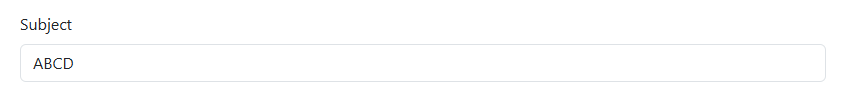

Inżynieria testów oprogramowania · projekt zespołowy
Czy system rezerwacji Restful-Booker-Platform jest gotowy dla gości?
Raport z projektu testowego · ostatnie pełne uruchomienie testów: 14 listopada 2026 11:07
Przetestowaliśmy publiczną aplikację Restful-Booker-Platform (automationintesting.online) – stronę pensjonatu, na której gość przegląda pokoje, rezerwuje pobyt i może wysłać wiadomość, a administrator loguje się do panelu.
Gość nie może zarezerwować pokoju – strona rezerwacji w ogóle się nie otwiera. Pozostałe funkcje (formularz kontaktowy, sprawdzanie danych, ochrona panelu administratora) działają, ale nie równoważą tego, że główna funkcja pensjonatu nie działa.
test lead i koordynacja (ryzyka, spójność artefaktów, rekomendacja)
projekt testów (przypadki, techniki EP/BVA/DT)
wykonanie testów, evidence i defekty
API i automatyzacja
Co testowaliśmy i gdzie widzieliśmy największe ryzyko
Przedstawia: Kamil Andrzejewski · test lead i koordynacja (ryzyka, spójność artefaktów, rekomendacja)
Celem było sprawdzenie trzech rzeczy: czy gość może znaleźć pokój i go zarezerwować, czy aplikacja poprawnie sprawdza wpisywane dane (np. w formularzu kontaktowym) i czy panel administratora jest chroniony przed osobami bez uprawnień.
Świadomie nie testowaliśmy wydajności (to publiczna aplikacja szkoleniowa, której nie wolno obciążać), płatności ani bezpieczeństwa w sensie testów penetracyjnych. Testy prowadziliśmy w przeglądarce Chrome na komputerze.
Jak wybraliśmy, co testować najpierw
Zanim napisaliśmy testy, zastanowiliśmy się, co może pójść źle i jak bardzo by to zabolało. Dla każdego zagrożenia oceniliśmy, jak jest prawdopodobne i jak poważne byłyby skutki. Im wyższa ocena, tym wcześniej i dokładniej to testowaliśmy.
| Co może pójść źle | Prawdopodobieństwo | Skutki | Ocena ryzyka |
|---|---|---|---|
| Gość nie może zarezerwować pokoju | duże | poważne | wysokie |
| Osoba bez uprawnień widzi rezerwacje lub panel admina | średnie | poważne | wysokie |
| Wybrane daty zmieniają się po drodze albo cena jest źle liczona | średnie | poważne | wysokie |
| Formularze przyjmują błędne dane albo psują się na nich | duże | istotne | wysokie |
| Testy psują sobie dane (reset środowiska, brak sprzątania) | duże | istotne | wysokie |
| Lista pokoi i szczegóły pokoju się nie zgadzają | średnie | istotne | średnie |
Ocena = prawdopodobieństwo × skutki (każde w skali 1–3). Pełna analiza: 01_TestPlan.pdf.
Jak zaprojektowaliśmy testy
Przedstawia: Karol Myszkowski · projekt testów (przypadki, techniki EP/BVA/DT)
Przygotowaliśmy 22 przypadków testowych: 12 sprawdza aplikację tak, jak korzysta z niej człowiek w przeglądarce, a 10 sprawdza bezpośrednio serwer (API – część, z którą rozmawia strona). 12 z nich to testy „negatywne”, czyli celowo podajemy złe dane i sprawdzamy, czy aplikacja je odrzuci.
Każdy przypadek testowy to dokładny przepis, który ktoś inny może powtórzyć. Oto jeden z nich:
- Nazwa
- Temat wiadomości ma 4 znaki – o jeden za mało
- Cel
- Sprawdzić, czy formularz kontaktowy odrzuci za krótki temat (dozwolone 5–100 znaków).
- Dane
- Poprawne imię, email i telefon; temat „ABCD”.
- Kroki
- Wypełnić formularz → kliknąć „Submit”.
- Oczekujemy
- Wiadomość odrzucona, widoczny komunikat o długości tematu.
- Wynik
- Zgodny z oczekiwaniami

1. Temat „ABCD” (4 znaki, min. 5), pozostałe pola poprawne 2. Odrzucenie (HTTP 400): „Subject must be between 5 and 100 characters.”
2. Odrzucenie (HTTP 400): „Subject must be between 5 and 100 characters.”Skąd wiedzieliśmy, jakie dane wybrać
Nie wybieraliśmy danych na chybił trafił. Użyliśmy trzech technik wymaganych w projekcie:
Klasy równoważności – dzielimy możliwe dane na grupy, w których aplikacja powinna zachować się tak samo, i z każdej grupy bierzemy jeden przykład. Dla adresu email: poprawny adres, zły format („bledny-email”), zły typ danych i brak adresu.
Wartości brzegowe – błędy najczęściej czają się na granicach. Skoro temat musi mieć od 5 do 100 znaków, sprawdzamy 4 znaki (powinno odrzucić) i 5 znaków (powinno przyjąć). Tak samo telefon: 10 i 11 cyfr.
Tablica decyzyjna – gdy wynik zależy od kilku warunków naraz, rozpisujemy wszystkie kombinacje. W formularzu: email dobry lub zły × temat dobry lub zły – wiadomość ma zostać wysłana tylko wtedy, gdy oba są dobre.
Testy eksploracyjne
Oprócz zaplanowanych przypadków przeprowadziliśmy swobodną, ograniczoną czasowo sesję, w której szukaliśmy problemów „na wyczucie” – z jasno określonym celem: nietypowe daty i dane w rezerwacji. Tak znaleźliśmy dwa dodatkowe błędy (opisane w rozdziale 3).
- Sesja
- EXP-02, 13 listopada 2026, 30 minut 36 sekund
- Cel (charter)
- Znaleźć problemy w rezerwacji przy nietypowych datach i danych, sprawdzić powiązania strony z serwerem i zachowanie danych przy resecie środowiska.
- Pomysły
- Śledzenie danych od formularza do serwera, cykl utwórz–odczytaj–zmień–usuń, granice długości pól, różne strefy czasowe.
- Wynik
- Dwa nowe błędy (wyszukiwanie w strefie UTC+14, wygasłe logowanie) i potwierdzone granice trzech pól formularza.
- Jak
- Z pomocą narzędzi (Playwright, asystent AI); ustalenia sprawdzone ponownie na żywo 14 listopada.
Wszystkie przypadki: 02_TestCases.md · notatki z eksploracji: 03_Exploratory.pdf
Co wyszło z testów i jakie błędy znaleźliśmy
Przedstawia: Kacper Walkowiak · wykonanie testów, evidence i defekty
Uruchomiliśmy wszystkie 22 przypadki. 14 zakończyło się tak, jak oczekiwaliśmy, 5 wykazało błąd aplikacji, a 3 w ogóle nie dało się wykonać – to testy rezerwacji, do których nie da się dojść, bo strona rezerwacji się nie otwiera. Żaden przypadek nie został pominięty bez wyjaśnienia.
Testy w przeglądarce: 9 zgodnie, 3 zablokowane. Testy serwera (API): 5 zgodnie, 5 z błędem.
Każdy wynik ma dowód
Dla każdego testu zapisaliśmy dowód: przy testach w przeglądarce – zrzuty ekranu po każdym kroku, przy testach serwera – dokładnie, co wysłaliśmy, co dostaliśmy i co sprawdziliśmy. Dzięki temu każdy wynik może zweryfikować ktoś, kto nie był przy testach.
 1. Email w złym formacie: „bledny-email”
1. Email w złym formacie: „bledny-email” 2. Reguła 3: błędny email odrzucony (HTTP 400)
2. Reguła 3: błędny email odrzucony (HTTP 400) 3. Reguła 4: błędny email i temat „ABCD” – oba komunikaty
3. Reguła 4: błędny email i temat „ABCD” – oba komunikaty
Znalezione błędy
Znaleźliśmy 4 różne błędy. Jeśli kilka testów trafiało na ten sam problem, zgłaszaliśmy go raz – dlatego jeden błąd może dotyczyć wielu przypadków.
| Błąd | Waga | Gdzie wykryty |
|---|---|---|
| Strona pokoju i rezerwacja w ogóle się nie otwierają Każde zapytanie o konkretny pokój, wiadomość czy rezerwację (po numerze) kończy się błędem serwera. Gość widzi tylko kręcące się kółko i nie może zarezerwować pokoju. | krytyczny | 7 przypadków |
| Nietypowo wysłany email powoduje awarię zamiast komunikatu Gdy email zostanie wysłany w złym formacie technicznym (jako obiekt zamiast tekstu), serwer zgłasza awarię zamiast grzecznie odrzucić dane. | średni | 1 przypadek |
| Wygasłe logowanie powoduje awarię zamiast prośby o zalogowanie Z nieważnym „biletem” logowania system zgłasza błąd serwera, zamiast odpowiedzieć „zaloguj się ponownie”. | średni | testy eksploracyjne |
| Dla osób w innej strefie czasowej wyszukiwarka szuka o dzień wcześniej Gdy komputer gościa ma strefę czasową UTC+14, wyszukiwarka wysyła daty przesunięte o jeden dzień względem tych, które wybrał. | poważny | testy eksploracyjne |
Każde zgłoszenie zawiera dokładne kroki, dzięki którym ktoś inny może błąd powtórzyć: 04_Defects.md · wszystkie wyniki z dowodami: raport z testów
Testy API i automatyzacja
Przedstawia: Mateusz Krzyzak · API i automatyzacja
API to „zaplecze” aplikacji – strona internetowa wysyła do serwera zapytania (np. „pokaż listę pokoi”, „zapisz wiadomość”) i dostaje odpowiedzi. Testując API, sprawdzamy serwer bezpośrednio, bez przeglądarki. Każda odpowiedź ma kod: 200 oznacza sukces, 400 – odrzucenie złych danych, 401 – brak uprawnień, 404 – brak zasobu, a 500 – awarię serwera.
Napisaliśmy 10 testów API i 12 testów w przeglądarce. Sprawdzają m.in.: czy lista pokoi ma poprawne dane, czy serwer odrzuca wiadomość bez wymaganych pól lub ze złym emailem, czy odmawia logowania złym hasłem i czy nie pokazuje rezerwacji osobie niezalogowanej.
Jak zbudowane są testy API
Testy API mają budowę warstwową, jak w profesjonalnych projektach. Każda warstwa ma jedno zadanie, dzięki czemu testy są krótkie i czytelne, a zmiana w API wymaga poprawki w jednym miejscu.
| Warstwa | Za co odpowiada | Przykład |
|---|---|---|
| Test | Opisuje scenariusz i sprawdza wynik (asercje) | „wyślij wiadomość ze złym emailem i sprawdź, że została odrzucona” |
| Klient API | Wie, jak wywołać dany adres serwera; po jednym dla pokoi, wiadomości, rezerwacji i logowania | api.messages.create(...), api.rooms.list() |
| Builder danych | Tworzy poprawne dane testowe; test zmienia tylko to, co sprawdza | buildMessage(name, { email: 'nie-jest-mailem' }) |
| Evidence | Każde wywołanie automatycznie zapisuje zapytanie, odpowiedź i wynik sprawdzeń | evidence/api/API-05.json |
test('API-05 Niepoprawny format email wiadomości', async ({ audit: a, api }) => {
const name = uniqueMarker();
const r = await api.messages.create(buildMessage(name, { email: 'nie-jest-mailem' }));
a.check(r.status, 400, 'Błędny email: HTTP 400');
a.check(r.body.includes('must be a well-formed email address'), true, 'Komunikat walidacji email');
const list = await api.messages.list();
a.check(list.status, 200, 'Lista wiadomości');
a.check(list.body.messages.some((x) => x.name === name), false, 'Odrzucony rekord nie został zapisany');
});Pełny cykl życia danych
Najważniejszy jest test, który przechodzi cały „cykl życia” wiadomości: tworzy ją, odczytuje, zmienia i usuwa – i po każdym kroku sprawdza, czy wszystko się zgadza. Tak wyglądał w ostatnim uruchomieniu:
- ✓Logujemy się jako administrator – działa
- ✓Wysyłamy nową wiadomość – działa
- ✓Szukamy jej na liście wiadomości – działa
- ✗Otwieramy ją po numerze – błąd serwera (kod 500)
- ✗Oznaczamy jako przeczytaną (zmiana) – błąd serwera (kod 500)
- ✗Sprawdzamy na liście, czy zmiana się zapisała – wynik niezgodny z oczekiwanym
- ✗Usuwamy naszą wiadomość – błąd serwera (kod 500)
- ✗Sprawdzamy, czy zniknęła – wynik niezgodny z oczekiwanym
Tworzenie wiadomości działa, ale każda operacja na konkretnej wiadomości (otwarcie, zmiana, usunięcie) kończy się awarią serwera. To ten sam błąd, który blokuje rezerwację. Analogiczny test przeprowadziliśmy dla rezerwacji – z takim samym wynikiem.
Testy w przeglądarce: Page Object Model
Testy w przeglądarce napisaliśmy w modelu Page Object Model (POM). Każda strona aplikacji ma własną klasę, która wie, gdzie są przyciski i pola i jak ich używać. Sam test nie szuka już elementów na stronie – opisuje tylko scenariusz, jak instrukcję dla człowieka. Gdy zmieni się wygląd strony, poprawia się jedną klasę, a nie każdy test.
| Klasa (obiekt strony) | Co reprezentuje | Przykładowe akcje |
|---|---|---|
| HomePage | Strona główna: katalog pokoi i wyszukiwarka dostępności | otwórz stronę, wybierz daty, sprawdź dostępność |
| ContactForm | Formularz kontaktowy | wypełnij pola, wyślij, odczytaj komunikat błędu lub potwierdzenie |
| ReservationPage | Strona rezerwacji pokoju | otwórz rezerwację, wpisz dane gościa, wyślij rezerwację |
| AdminLoginPage | Logowanie do panelu administratora | wpisz login i hasło, zaloguj, odczytaj błąd |
Tak wygląda prawdziwy test „temat wiadomości ma 4 znaki” – czyta się go prawie jak opis kroków z przypadku testowego:
test('UI-05 Temat 4 znaki: poniżej minimum', async ({ page, audit: a, home, contactForm }) => {
await home.open();
await contactForm.fill(buildMessage(uniqueMarker(), { subject: 'ABCD' }));
await a.step(page, 'Temat „ABCD” (4 znaki, min. 5), pozostałe pola poprawne', [contactForm.subject]);
const r = await contactForm.submit(a);
a.check(r.status, 400, 'Temat 4 znaki odrzucony');
await expect(contactForm.errorText('Subject must be between 5 and 100 characters.')).toBeVisible();
await a.step(page, 'Odrzucenie (HTTP 400): „Subject must be between 5 and 100 characters.”', [contactForm.subject, contactForm.errors]);
});Automatyzacja
Wszystkie 22 testów są zautomatyzowane: komputer wykonuje je sam, w około pół minuty, jednym poleceniem (npm test), i za każdym razem w ten sam sposób. Po uruchomieniu powstaje raport z wynikami i dowodami. Instrukcja uruchomienia na czystym komputerze jest w 05_Automation/README.md.
Testy nie opierają się na stałych danych – za każdym razem pobierają aktualny stan aplikacji i tworzą własne, oznaczone dane testowe. Nie powtarzają się automatycznie przy błędzie, żeby nie ukrywać problemów i nie obciążać publicznej aplikacji.
Kod testów: api.spec.ts, ui.spec.ts, pages/ (Page Object Model) · raport z ostatniego uruchomienia
Decyzja i jej uzasadnienie
Przedstawia: Kamil Andrzejewski · test lead i koordynacja (ryzyka, spójność artefaktów, rekomendacja)
Rekomendujemy NO-GO – system w obecnym stanie nie jest gotowy do obsługi gości. Uzasadnienie jest proste: najważniejsze ryzyko, które zidentyfikowaliśmy na początku (gość nie może zarezerwować pokoju), sprawdziło się. Potwierdzają to wyniki testów w przeglądarce, testy serwera i powtórna weryfikacja.
Nie oznacza to, że cała aplikacja jest zła. Formularz kontaktowy, sprawdzanie danych i ochrona panelu administratora działają poprawnie. Ale bez działającej rezerwacji pensjonat nie spełnia swojego podstawowego zadania.
Co musiałoby się zmienić, żeby decyzja brzmiała „tak”
Naprawa błędu blokującego otwieranie pokoi i rezerwacji, ponowne uruchomienie trzech zablokowanych testów rezerwacji oraz testów zmiany danych, poprawienie obsługi nietypowych danych i wygasłego logowania, a na koniec pełne ponowne uruchomienie wszystkich testów.
Pełny raport końcowy: 06_TestSummaryReport.pdf
Słowniczek
- Przypadek testowy
- Dokładny przepis na jeden test: cel, dane, kroki i oczekiwany wynik.
- Zgodny z oczekiwaniami / błąd / zablokowany (PASS / FAIL / BLOCKED)
- Wynik testu: aplikacja zachowała się tak, jak powinna / nie tak, jak powinna / testu nie dało się wykonać z powodu przeszkody.
- API
- Zaplecze aplikacji, z którym rozmawia strona internetowa. Testy API sprawdzają serwer bez przeglądarki.
- Kody odpowiedzi
- 200 – sukces, 400 – złe dane, 401 – brak uprawnień, 404 – nie ma takiego zasobu, 500 – awaria serwera.
- Ryzyko
- Coś, co może pójść źle, ocenione według prawdopodobieństwa i skutków. Nie musi być znanym błędem.
- Waga błędu
- Jak poważny jest błąd: krytyczny (blokuje kluczową funkcję), poważny, średni, drobny.
- Dowód (evidence)
- Zapis z wykonania testu: zrzuty ekranu albo zapis zapytań i odpowiedzi serwera.
- Automatyzacja
- Testy zapisane jako program, który komputer wykonuje sam i powtarzalnie.
- Testy eksploracyjne
- Swobodne, ograniczone czasowo szukanie błędów z jasno określonym celem.
Pliki projektu: README · plan testów · przypadki testowe · eksploracja · zgłoszenia błędów · raport z testów · raport końcowy